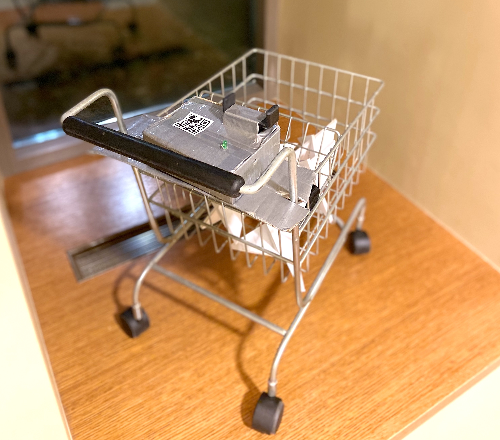
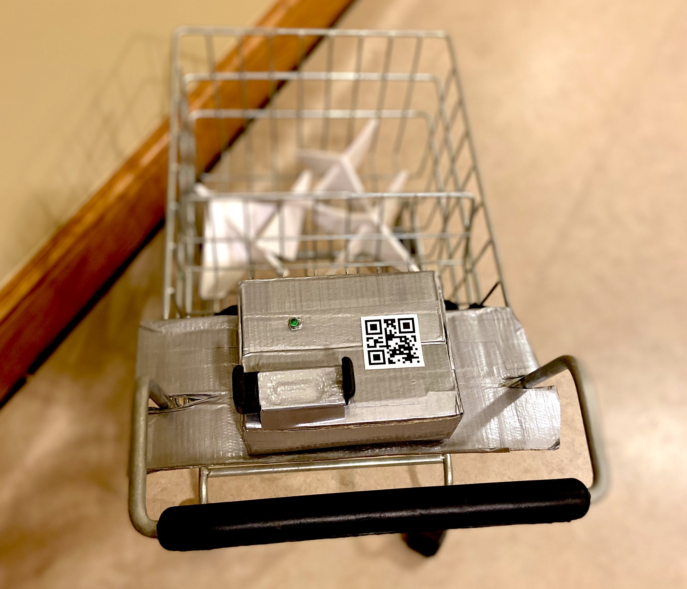
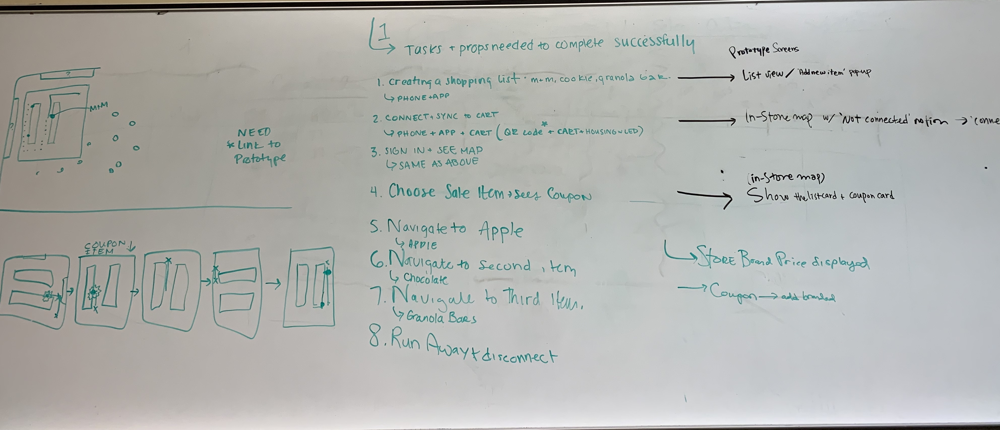
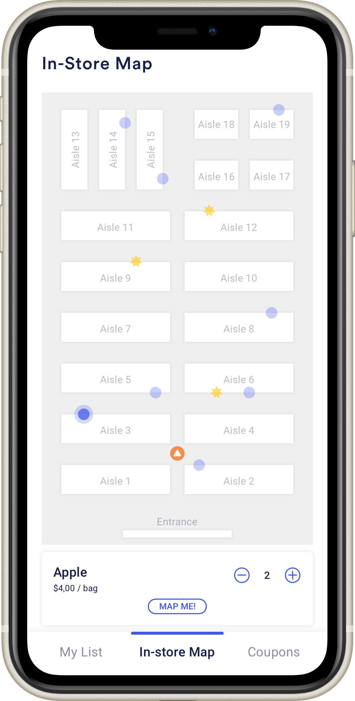
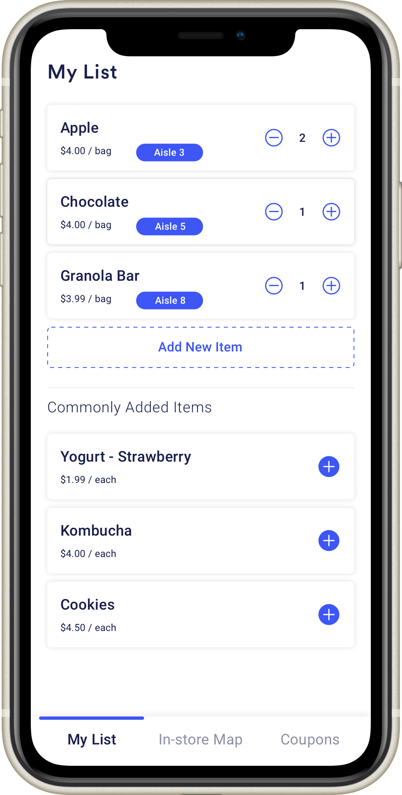

Milestone 4
Prototype, Presentation, and Final Demo
System Concept and High-level architecture
The final proposed system consists of a sensor network that integrates with existing grocery store apps. Users pair their phone with a Bluetooth device on a shopping cart by scanning a QR code. A network of indoor positioning sensors throughout the store communicates with hardware on the cart using iBeacon technology to calculate the user’s position and the location of all their list items. The cart communicates with the user’s phone via Bluetooth to show where all the items are on their list.
Our system would be sold to grocery stores chains, and we would integrate it into their existing smartphone application. This allows users to create their shopping lists in apps they’re already using. The Bluetooth sensor will help sync the user’s list with the shopping system to display items on a “Bird’s-Eye view” floor plan of the store, and give navigation to items when a user asks for it. The system can speed up users’ shopping trips and improve their experience in the grocery store.


system architecture infographic
Goals for the Demo
Our primary goal for the demo is to show how a grocery shopping system integrated with the phone can help users improve their shopping efficiency and experience. In our demo, we try to replicate the experience of using a smartphone app to create a list, syncing with a smart shopping cart, following a responsive “Bird’s-Eye view” map and navigation line to find items, displaying real-time coupon and sale information, and finishing shopping with less time and more enjoyment.
Based on our previous findings and feedback, we know that users want to see where all the items on their list are in the store. They DO NOT want to be told how to walk to the next item without asking. They thought navigation towards items would be helpful, but only when they ask for it. Thus, in our demo, we created a “Bird’s-Eye view” map in our shopping system to show the location of all the items and the user themselves. With such a map view, users can speed up their trip.
With almost every participant we interviewed, they all mentioned one salient feature that they wish to know during their shopping trip, which is the coupon and sales information. In our demo, we integrated coupons with the list so that users could see if there is any discount on their buying items, which we think might improve their joy when they really buy things.
Demo
Script
Our user, Amy, is a graduate student and she usually goes grocery shopping on her own on the weekend.
- Amy plans to go to the grocery store today, and she thinks that she can buy some snacks this week. So she opens the smartphone app and creates a shopping list with chocolate, apples, and granola bars.
- When Amy arrives at the grocery store, she grabs a smart cart and takes a photo of QR code to sync with her phone. As her device is connected to the cart successfully, the LED light on the cart changes to green and let Amy start her shopping.
- With the “Bird-Eye” map on her app, she can see where all her items are and her location too. Blue dots are items on the list and the one with a yellow star indicates the item on sale.
- Amy goes to the ’Aisle 1’ first because based on the map view, the chocolate is the nearest item from her location. So she walks to the chocolate section and picks up the one that she usually gets.
- Next, Amy selects the one with the yellow star and finds that there are apples on sale today. So she taps the “Map Me” button to navigate herself seeing the navigation line on the map. Amy follows the direction and arrives where apples are.
- After getting apples, Amy finds that the granola bar is just nearby. So she walks there and chooses her favorite granola bar.
- When Amy finishes shopping, she taps the button “Finish shopping” on the top and then her phone and the shopping cart lose connection. Amy feels like she has a great experience in shopping here because she can find each item easily and also know the discounted items’ information.
Materials Used
Smartphone application
- Smartphone
- Invision prototype
Smart cart
- Small shopping cart
- Adafruit board
- LED light and button
- Phone holder
- Materials for microcontroller housing
Grocery Store
- Foam board
- Food items
- Price tag and sale tag
- Signs for aisle
Prototyping Process
Key Points
Our Prototype is comprised of an interactive Invision prototype to act as the smartphone app, a smart cart with electronics, and physical products and props to simulate a grocery store (grocery cart and foam board shelves). The Invision prototype will be projected onto a monitor so others can see what the user sees on their phone during their shopping trip.
Preparation
Our group went through high-level scripts and talked about the needed details of the prototype screen, and figured out how the map display would change as the users’ orientation change as well. We picked out exactly where users will need to walk during each step of the demo, and exactly which screens our Invision prototype would require.
User Interface Screen
Based on our previous work of storyboard and concepts, we created a mockup to help improve users interaction with our product. The basic interactions within are creating a list, viewing the store floor plan, and coupon notification and integration.
The Smart Cart
For the electronics, we put all components in a box on the shopping cart and wrote code for the Particle photon. We let the LED light change to green to indicate a successful connection between phone and cart.


Mini Grocery Store
We used foam board to create two small shelves to simulate a mini grocery store. We also made price tags, sale tags, and signs for the aisles.

Explanation
Our demo plans to cover many aspects of the real shopping experience for users.
Our Invision prototype will allow users to interact with their phone just like they would with a real smartphone app. We simulate how users would pair their phone with a shopping cart, and how they would use the map and list to find the items on their list. The Invision prototype also worked to simulate how the orientation of the store map would need to change as a user is moving around the store aisles.
We also built a low-fidelity physical environment and allowed the user to push around a shopping cart to simulate that part of the shopping experience as well. We also situated the phone and extra shopping cart hardware near the cart’s handle like it would be on a real implementation of the product.
There are a few parts of the experience our demo wasn’t able to include. The QR code scanning action had to be simulated, because we weren’t actually connecting the user’s phone to external hardware. Without connecting to actual hardware to get location information the Invision app can only roughly show the user’s movement through the store.
Lastly, our grocery list for this demo is very short. It’s only three items long, and all the items are near each other. This doesn’t match the experience a user would have with this system if they have three dozen items to buy spread out over a large store. It would be useful to study how effective this system is with a long list of items, but that’s outside the scope of this demo.
Feedback and Insights
When we did the InVision Mockup (showing the key screens and user interactions), it took us some time to figure out how to simulate the orientation of the store map when a user is moving around.
It’s also easy to forget how hard it can be to build physical products and props. While preparing for this demo each part of the physical prototype took a little more time and experimenting than we anticipated.